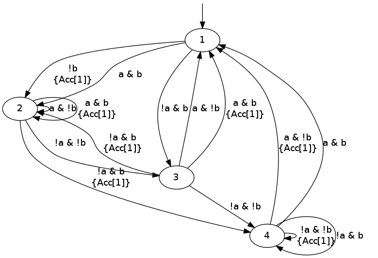
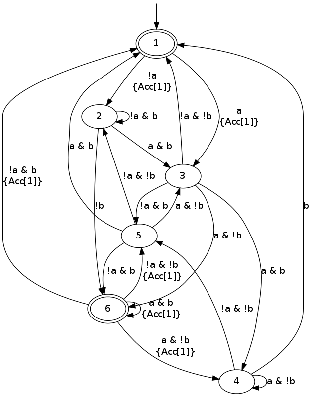
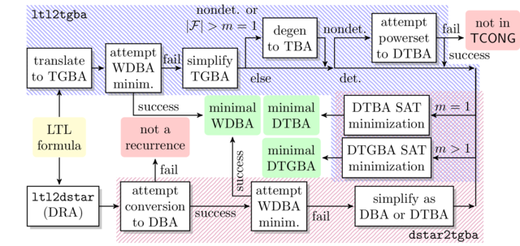

SAT-based Minimization of Deterministic (Generalized) Büchi Automata
This page explains how to use ltl2tgba or dstar2tgba to minimize
deterministic automata using a SAT solver.
Let us first state a few facts about this minimization procedure.
- The procedure works only on deterministic Büchi automata: any recurrence property can be converted into a deterministic Büchi automaton, and sometimes there are several ways of doing so.
- Spot actually implement two SAT-based minimization procedures: one that builds a deterministic transition-based Büchi automaton (DTBA), and one the builds a deterministic transition-based generalized Büchi automaton (DTGBA). For the latter, we can supply the number \(m\) of acceptance sets to use.
- These two procedures can optionally constrain their output to use state-based acceptance. (They simply restrict all the outgoing transitions of a state to belong to the same acceptance sets.)
- A SAT solver should be installed for this to work. (Spot does not distribute any SAT solver.)
ltl2tgbaanddstar2tgbawill always try to output an automaton If they fail to determinize the property, they will simply output a nondeterministic automaton, if they managed to obtain a deterministic automaton but failed to minimize it (e.g., the requested number of states in the final automaton is too low), they will return that "unminimized" deterministic automaton. There are only two cases where these tool will abort without returning an automaton: when the number of clauses output by Spot (and to be fed to the SAT solver) exceeds \(2^{31}\), or when the SAT-solver was killed by a signal.- Details about the SAT encoding used in the two procedures can be found in our FORTE'14 paper.
Table of Contents
How to change the SAT solver used
The environment variable SPOT_SATSOLVER can be used to change the
SAT solver used by Spot. The default is "glucose -verb=0 -model %I >%O", therefore if you have installed glucose 3.0 in your $PATH,
it should work right away. Otherwise you may redefine this variable
to point the correct location or to another SAT solver (for older
versions of glucose, remove the -model option). The %I and %O
sequences will be replaced by the names of temporary files containing
the input for the SAT solver and receiving its output. We assume that
the SAT solver should follow the conventions of the SAT competition
for input and output.
Enabling SAT-based minimization for deterministic automata
Both tools follow the same interface, because they use the same
post-processing steps internally (i.e., the spot::postprocessor
class).
First, option -D should be used to declare that you are looking for
more determinism. This will tweak the translation algorithm used by
ltl2tgba to improve determinism, and will also instruct the
post-processing routine used by both tools to prefer a
deterministic automaton over a smaller equivalent nondeterministic
automaton.
However -D is not a guarantee to obtain a deterministic automaton,
even if one exists. For instance, -D fails to produce a
deterministic automaton for GF(a <-> XXb). Instead we get a 9-state
non-deterministic automaton.
ltl2tgba -D "GF(a <-> XXb)" --stats='states=%s, det=%d'
states=9, det=0
Option -x tba-det enables an additional
determinization procedure, that would otherwise not be used by -D
alone. This procedure will work on any automaton that can be
represented by a DTBA; if the automaton to process use multiple
acceptance conditions, it will be degeneralized first.
On our example, -x tba-det successfully produces a deterministic
TBA, but a non-minimal one:
ltl2tgba -D -x tba-det "GF(a <-> XXb)" --stats='states=%s, det=%d'
states=7, det=1
Option -x sat-minimize will turn-on SAT-based minimization. It also
implies -x tba-det, so there is no need to supply both options.
ltl2tgba -D -x sat-minimize "GF(a <-> XXb)" --stats='states=%s, det=%d'
states=4, det=1
We can draw it:
ltl2tgba -D -x sat-minimize "GF(a <-> XXb)"

Clearly this is automaton benefits from the transition-based
acceptance. If we want a traditional Büchi automaton, with
state-based acceptance, we only need to add the -B option. The
result will of course be slightly bigger.
ltl2tgba -BD -x sat-minimize "GF(a <-> XXb)"

There are cases where ltl2tgba's tba-det algorithm fails to produce a deterministic automaton.
In that case, SAT-based minimization is simply skipped. For instance:
ltl2tgba -D -x sat-minimize "Ga R (F!b & (c U b))" --stats='states=%s, det=%d'
states=4, det=0
The question, of course, is whether there exist a deterministic
automaton for this formula, in other words: is this a recurrence
property? There are two ways to answer this question using Spot (and
some help from ltl2dstar).
The first is purely syntactic. If a formula belongs to the class of
"syntactic recurrence formulas", it expresses a syntactic property.
(Of course there are formulas that expresses a syntactic properties
without being syntactic recurrences.) ltlfilt can be instructed to
print only formulas that are syntactic recurrences:
ltlfilt --syntactic-recurrence -f "Ga R (F!b & (c U b))"
Ga R (F!b & (c U b))
Since our input formula was output, it expresses a recurrence property.
The second way to check whether a formula is a recurrence is by
converting a deterministic Rabin automaton using dstar2tgba. The
output is guaranteed to be deterministic if and only if the input DRA
expresses a recurrence property.
ltlfilt -f "Ga R (F!b & (c U b))" -l | ltl2dstar --ltl2nba=spin:../../src/bin/ltl2tgba@-Ds - - | dstar2tgba -D --stats='input(states=%S) output(states=%s, acc-sets=%a, det=%d)'
input(states=11) output(states=9, acc-sets=1, det=1)
In the above command, ltlfilt is used to convert the LTL formula
into ltl2dstar's syntax. Then ltl2dstar creates a deterministic
Rabin automaton (using ltl2tgba as an LTL to BA translator), and the
resulting 11-state DRA is converted into a 9-state DTBA by
dstar2tgba. Since that result is deterministic, we can conclude
that the formula was a recurrence.
As far as SAT-based minimization goes, dstar2tgba will take the same
options as ltl2tgba. For instance we can see that the smallest DTBA
has 6 states:
ltlfilt -f "Ga R (F!b & (c U b))" -l | ltl2dstar --ltl2nba=spin:../../src/bin/ltl2tgba@-Ds - - | dstar2tgba -D -x sat-minimize --stats='input(states=%S) output(states=%s, acc-sets=%a, det=%d)'
input(states=11) output(states=6, acc-sets=1, det=1)
More acceptance sets
The formula "Ga R (F!b & (c U b))" can in fact be minimized into an
even smaller automaton if we use multiple acceptance sets.
Unfortunately because dstar2tgba does not know the formula being
translated, and it always convert a DRA into a DBA (with a single
acceptance set) before further processing, it does not know if using
more acceptance sets could be useful to further minimize it. This
number of acceptance sets can however be specified on the command-line
with option -x sat-acc=M. For instance:
ltlfilt -f "Ga R (F!b & (c U b))" -l | ltl2dstar --ltl2nba=spin:../../src/bin/ltl2tgba@-Ds - - | dstar2tgba -D -x sat-minimize,sat-acc=2 --stats='input(states=%S) output(states=%s, acc-sets=%a, det=%d)'
input(states=11) output(states=5, acc-sets=2, det=1)
Beware that the size of the SAT problem is exponential in the number of acceptance sets.
The case of ltl2tgba is slightly different because it can remember
the number of acceptance sets used by the translation algorithm, and
reuse that for SAT-minimization even if the automaton had to be
degeneralized in the meantime for the purpose of determinization.
Low-level details
The following figure gives an overview of the processing chains that
can be used to turn an LTL formula into a minimal DBA/DTBA/DTGBA. The
blue area at the top describes ltl2tgba -D -x sat-minimize, while
the purple area at the bottom corresponds to dstar2tgba -D -x stat-minimize.

The picture is slightly inaccurate in the sense that both ltl2tgba
and dstar2tgba are actually using the same post-processing chain:
only the initial translation to TGBA or conversion to DBA differs, the
rest is the same. However in the case of dstar2tgba, no
degeneration or determinization are needed.
Also the picture does not show what happens when -B is used: any
DTBA is degeneralized into a DBA, before being sent to "DTBA SAT
minimization", with a special option to request state-based output.
The WDBA-minimization boxes are able to produce minimal Weak DBA from
any TGBA representing an obligation property. In that case using
transition-based or generalized acceptance will not allow further
reduction. This minimal WDBA is always used when -D is given
(otherwise, for the default --small option, the minimal WDBA is only
used if it is smaller than the nondeterministic automaton it has been
built from).
The "simplify" boxes are actually simulation-based reductions, and SCC-based simplifications.
The red boxes "not in TCONG" or "not a recurrence" correspond to situations where the tools will produce non-deterministic automata.
The following options can be used to fine-tune this procedure:
-x tba-det- attempt a powerset construction and check if there exists a acceptance set such that the resulting DTBA is equivalent to the input
-x sat-minimize- enable SAT-based minimization. By default it
tries to reduce the size of the automaton one state at a time.
This option implies
-x tba-det. -x sat-minimize=2- enabled SAT-based minimization, but perform a
dichotomy to locate the correct automaton size. Use this only if
you suspect that the optimal size is far away from the input
size. This option implies
-x tba-det. -x sat-acc=$m$- attempt to build a minimal DTGBA with \(m\) acceptance sets.
This options implies
-x sat-minimize. -x sat-states=$n$- attempt to build an equivalent DTGBA with \(n\)
states. This also implies
-x sat-minimizebut won't perform any loop to lower the number of states. Note that \(n\) should be the number of states in a complete automaton, whileltl2tgbaanddstar2tgbaboth remove sink states in their output by default (use option--completeto output a complete automaton). Also note that even with the--completeoption, the output automaton may have appear to have less states because the other are unreachable. -x state-based- for all outgoing transition of each state to belong to the same acceptance sets.
-x !wdba-minimize- disable WDBA minimization.
When options -B and -x sat-minimize are both used, -x state-based and -x sat-acc=1 are implied.
Logging statistics
If the environment variable SPOT_SATLOG is set to the name of a
file, the minimization function will append statistics about each of
its iterations in this file.
rm -f stats.csv export SPOT_SATLOG=stats.csv ltlfilt -f "Ga R (F!b & (c U b))" -l | ltl2dstar --ltl2nba=spin:../../src/bin/ltl2tgba@-Ds - - | dstar2tgba -D -x sat-minimize,sat-acc=2 --stats='input(states=%S) output(states=%s, acc-sets=%a, det=%d)' cat stats.csv
input(states=11) output(states=5, acc-sets=2, det=1) 9,8,35,64,44064,9043076,982,30,281,21 7,7,33,56,14504,2191905,237,5,114,5 6,6,28,48,10512,1358243,147,3,42,3 5,,,,7200,782342,85,1,30,1
The generated CSV file use the following columns:
- the n passed to the SAT-based minimization algorithm (it means the input automaton had n+1 states)
- number of reachable states in the output of the minimization.
- number of edges in the output
- number of transitions
- number of variables in the SAT problem
- number of clauses in the SAT problem
- user time for encoding the SAT problem
- system time for encoding the SAT problem
- user time for solving the SAT problem
- system time for solving the SAT problem
Times are measured with the times() function, and expressed in ticks (usually: 1/100 of seconds).
In the above example, the input DRA had 11
states. In the first line of the stats.csv file, you can see the
minimization function searching for a 9 state DTBA and obtaining a
8-state solution. (Since the minimization function searched for a
9-state DTBA, it means it received a 10-state complete DTBA, so the
processings performed before the minimization procedure managed to
convert the 11-state DRA into a 10-state DTBA.) Starting from the
8-state solution, it looked for (and found) a 7-state solution, and
then a 6-state solution. The search for a 5-state complete DTBA
failed. The final output is reported with 5 states, because by
default we output trim automata. If the --complete option had been
given, the useless sink state would have been kept and the output
automaton would have 6 states.